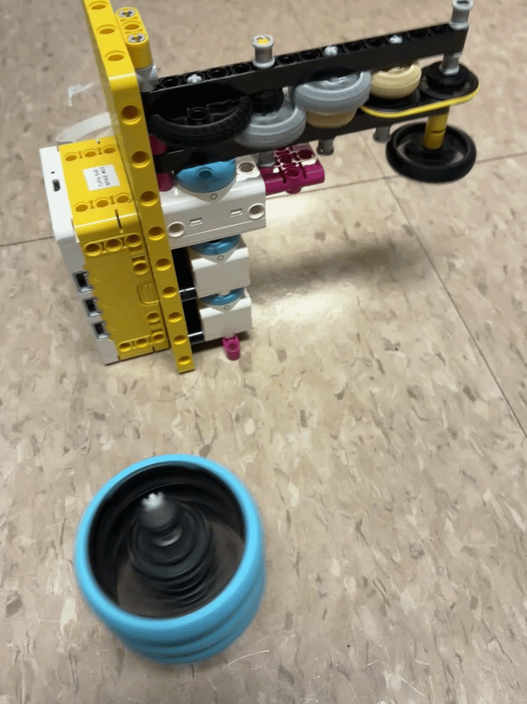

For this project, we were tasked with craeting some type of machine out of Legos that could spin a top (also made out of Legos). The unique twist I tried to put on it was that instead of using a single motor, I decided to chain all three of my motors in series to increase the torque they could exert. The other idea I had that I didn't see any other instances of was the use of the pulleys. I used them in order to allow some slipping in the system to prevent stripping gears and to allow a smoother ramp up. I call my design the KitchenHelper4000.